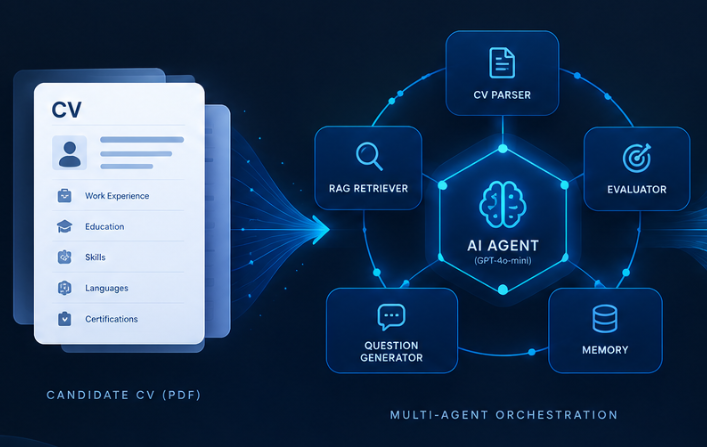

AI Talent Intelligence System
Enterprise-grade multi-agent RAG platform combining vector retrieval, persistent memory, and LLM orchestration (GPT-4o-mini) to automate candidate CV parsing, evaluation, and question generation.
AI / RAG
Multi-Agent
FastAPI
Streamlit
Python